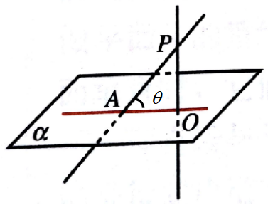
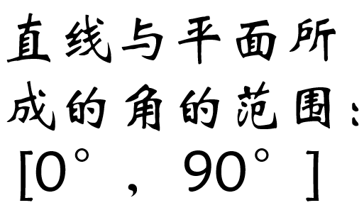

|
|
如图，直线$PA$和平面$\alpha$相交但不垂直， 直线$PA$叫做平面$\alpha$的斜线， 直线$PA$和平面$\alpha$的交点$A$叫斜足。
|  |  |
已知PA⊥平面ABCD，四边形ABCD为正方形，PA=AB.
1)分别求出PA、PB、PD与平面ABCD所成的角；
2)分别求出PC与平面ABCD、平面PAD和平面PAB所成角的正切值。
|
|
解：
1) $\because PA$⊥$AC$，$\therefore$直线$PA$与平面$AC$所成角为$90^\circ$;
$\because PA$⊥$AC$，$\therefore AB$为直线$PB$在平面$AC$上的射影， 从而直线$PB$与平面$AC$所成角为$45^\circ$; 同理直线$PD$与平面$AC$所成角为$45^\circ$.
2) $PC$与平面$AC$: $\tan\angle PCA=\frac{PA}{AC}=\frac{\sqrt{2}}{2}$
$PC$与平面$PAD$: $\tan\angle CPD=\frac{CD}{PD}=\frac{\sqrt{2}}{2}$
$PC$与平面$PAB$: $\tan\angle CPB=\frac{BC}{PB}=\frac{\sqrt{2}}{2}$
1)求证：BC⊥平面PAC;
2)求PC所在直线与平面ABC所成角的余弦值.
|
|